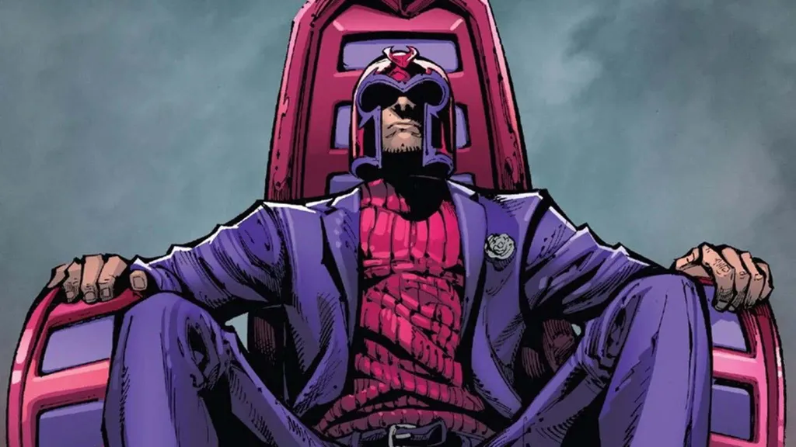
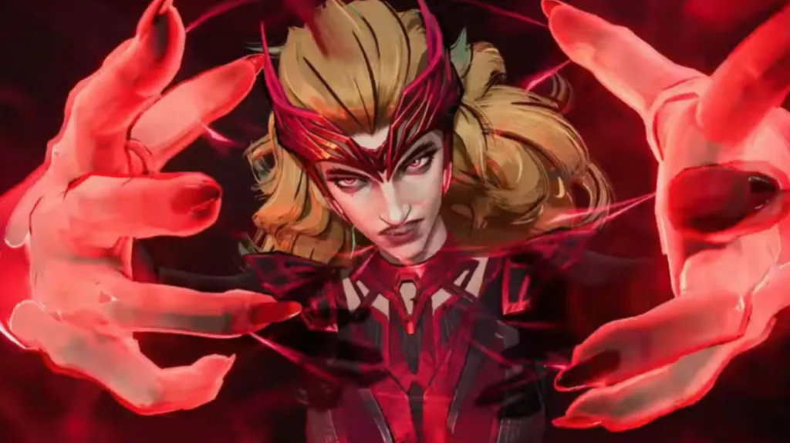

Magneto já salvou a humanidade (mais de uma vez)

Quando pensamos em vilões no universo dos quadrinhos, nomes como Coringa, Thanos e Magneto costumam aparecer entre os primeiros. Mas e se eu te dissesse que nem todo vilão é só maldade? Na verdade, alguns deles já tomaram decisões heroicas e Magneto é um ótimo exemplo disso.
Você sabia que, apesar de ser conhecido como inimigo dos X-Men, Magneto já salvou a humanidade mais de uma vez? Pois é! Vamos explorar essas atitudes surpreendentes do mestre do magnetismo e entender o que elas revelam sobre a complexidade moral dos personagens dos quadrinhos.
Entendendo o Magneto: herói, vilão ou os dois?

Antes de falar dos feitos heroicos de Magneto, vale entender quem ele é. Magneto, cujo nome verdadeiro é Erik Lehnsherr, é um mutante com o poder de manipular campos magnéticos. Ele teve uma infância trágica marcada pelo Holocausto, o que moldou sua visão de mundo. Não é de se estranhar que ele veja a humanidade com desconfiança.
Mas diferentemente de vilões unidimensionais, Magneto acredita que suas ações são justificadas que está apenas protegendo sua raça, os mutantes, de um mundo que os teme. Isso faz dele um personagem com uma moral cinzenta, alguém que transita entre o bem e o mal.
+ Leia mais: Darth Vader poderia ser julgado por crimes de guerra?
As vezes em que Magneto salvou o mundo
Mesmo com todas as suas atitudes questionáveis, Magneto já foi o herói da história em diversas situações. Quer ver alguns exemplos?
1. Quando ele liderou os X-Men
Quem diria que o maior inimigo dos X-Men iria um dia liderar o grupo? Pois é, nos anos 80, durante a fase escrita por Chris Claremont, Magneto assumiu a liderança da Escola para Jovens Superdotados do Professor Xavier. Com Xavier ferido e afastado da escola, Magneto percebe que os mutantes precisavam de um líder alguém forte e disposto a protegê-los.
Apesar da desconfiança inicial, ele se esforça para orientar a nova geração de mutantes, agindo como um verdadeiro mentor. Essa fase mostra um Magneto vulnerável, mas também disposto a mudar. Ele não precisou abandonar suas convicções, mas entendeu que proteger os mutantes podia significar seguir um novo caminho.
2. Quando enfrentou um vilão ainda maior
Durante o arco AXIS nos quadrinhos da Marvel, vários heróis e vilões trocam de personalidade. Magneto, nesse período, passa a lutar de forma ainda mais ativa ao lado dos mocinhos, enfrentando ameaças que colocariam fim à humanidade.
Um dos momentos mais marcantes é quando ele se une aos Vingadores para lutar contra o vilão Red Onslaught, uma junção entre Caveira Vermelha e os poderes mentais de Charles Xavier. Se Magneto não tivesse agido, o planeta teria sido destruído por ondas de ódio incontrolável.
3. Quando impediu a destruição dos mutantes em “House of M”

Ok, esse aqui é mais complexo. Na saga “House of M”, criada por Brian Michael Bendis, a Feiticeira Escarlate filha de Magneto altera a realidade e cria um mundo onde os mutantes dominam. Mas tudo sai do controle. A confusão emocional da Feiticeira começa a ameaçar o equilíbrio do universo.
Magneto, ao perceber que ela estava fora de si, se vê forçado a tomar uma decisão drástica. Ele tenta detê-la com dor no coração para evitar que tudo acabe em desastre. Seu gesto não impediu as consequências catastróficas do evento, mas mostrou sua preocupação com o futuro de todos, não apenas dos mutantes.
O que isso nos ensina sobre moralidade nos quadrinhos?
Esses momentos nos fazem pensar: será que vilões são sempre vilões? Ou será que, em certas situações, eles apenas fazem o que acreditam ser certo?
No caso de Magneto, suas ações revelam uma coisa importante: ele é movido por trauma e sobrevivência, não por desejo puro de destruição. Para muitos leitores, isso o torna mais humano, mais real. Afinal, quem nunca reagiu com base na dor ou na proteção de quem ama?
Nos quadrinhos e na vida nem tudo é preto e branco. Magneto é o exemplo perfeito de como personagens complexos tornam as histórias mais interessantes. Ele pode ser cruel, mas também é um pai, um líder e, em alguns casos, um salvador. Dizer que ele é apenas um vilão não faz justiça à sua trajetória.
Outros vilões que já agiram como heróis
Magneto não está sozinho nessa. Existem outros personagens que, mesmo sendo vilões na maior parte do tempo, já mostraram um lado heróico:
- Loki: já salvou Asgard e até o universo algumas vezes, mesmo que de forma egoísta.
- Venom: começou como inimigo do Homem-Aranha, mas virou anti-herói e até salvou a Terra de ameaças alienígenas.
- Mistério: em algumas versões alternativas, como no arco “Old Man Logan”, ele age de forma surpreendente e até ajuda os heróis.
Esses exemplos mostram que a linha entre herói e vilão pode ser tênue. Tudo depende do ponto de vista, dos objetivos e das circunstâncias.
Por que adoramos personagens moralmente ambíguos?
Personagens moralmente cinzentos, como Magneto, fazem sucesso porque se parecem mais com a gente. Ninguém é 100% bom ou 100% mau. Todos tomamos decisões difíceis, erramos, buscamos redenção. Nos identificamos com essa dualidade.
Além disso, ver um vilão fazendo algo bom nos surpreende. E quem não gosta de uma boa reviravolta? Esses momentos humanizam os personagens e tornam a narrativa mais rica e imprevisível.
Magneto pode não ser um herói convencional, mas quando o mundo precisa de ajuda, ele deixa o orgulho de lado e faz o que precisa ser feito. E isso, no fundo, é uma forma de heroísmo.
Magneto é muito mais do que um simples vilão dos X-Men. Com sua história marcada pela dor, ele representa a luta pelos oprimidos mesmo que nem sempre pelos meios mais corretos. Nos momentos em que deixa o antagonismo de lado, vemos o verdadeiro potencial de um personagem complexo, inteligente e emocionalmente profundo.
Mas concluindo, isso nos lembra que até os personagens mais sombrios podem brilhar quando menos esperamos. E que, às vezes, as maiores demonstrações de heroísmo vêm de quem menos imaginamos.
Leia Também
- Deuses ou Humanos? O Dilema Moral dos X-Men
- Você viveria como um dispensável?
- O Batman é ético ao não matar o Coringa?
- A empresa Lumon viola os direitos humanos?
- Thanos: ecologista radical ou vilão com discurso ecológico?
Sharing is caring!